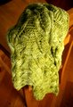
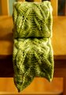

|
||
Premium Patterns Wintry Mix Mitts Love Bytes HawkeyeFree Patterns Kiddie Cadet Summerlin Ruffled Scarf Seamless DS Sock Simply Seamless Pouch Myriads of MushroomsExtras DIY Mitten Blocker Felt Patch Tutorial Yarn Dyeing Tutorial Needle Pouches Knitting Journal |
April 01, 2008 - Posted by Grace SchneblyBackyard LeavesProject Specs There is just something about this Malabrigo in Lettuce green that makes gives me the urge to create leaf lace knits! This is the second project in a row that I have used this colorway, and honestly I can’t get enough of it. I don’t think that I’ll be wearing my Foliage and Backyard Leaves together, that’s just a little to matchy-matchy for me, but I am sure that I’ll have plenty of time this spring to wear them out separately. It took a little getting used to the pattern. The most important thing to not when starting this pattern is that the chart is worked from left to right on all WS rows then from right to left on all RS rows. I had to restart the scarf once because I am so used to always reading color charts from right to left on every row, but once I had finished the first pattern repeat I was totally used to it. All of the other lace patterns I’ve knit (I have to admit there have been very few) have a plain knit or purl row between the pattern rows. Working the pattern on every row was new to me but easy to get the hang of. For the most part I really like the way the pattern looks. The slipped stitch border really awesome in my opinion and creates a great finished edge. I am also really impressed with how well defined the leaves come out! It takes a really creative mind to be able to come up with a lace chart like this. The thing that I am not loving about this pattern is the fact each half is knit separately then seamed together in the center. It was difficult for me to get the seam to not look horrid, and I am not exactly pleased with how it ended up. The scarf bows in at the center since the seam isn’t as stretch as the rest of it. I’d recommend casting on VERY loosely as well as making all of your increases loose during the first 8 rows of each half. I don’t think that the seam will be too noticeable when it is worn though so I am not stressing over the fact that it isn’t just right. I originally intended to block the scarf by running blocking wires inside the slipped stitch edges and pinning it out. However after seeing it all stretched and pinned out I decided I wanted to keep some of the leaf texture, and instead blocked it by just stretching it in place. The scarf came out a lot longer than I had expected. There is definitely enough length to be able to wrap it around my neck twice. If you didn’t want such a long scarf you could really easily modify the length by either adding or taking away some of the pattern repeats. I think the pattern would look really great as a little scarflette too. Malabrigo worsted really seems like the perfect match for this pattern. I think that the color variation in the yarn actually enhances the pattern instead of detracting from the lace stitching. Like Alice I am sad to see Malabrigo March come to an end. My showing this year wasn’t that strong, since I got into it pretty late in the month. Next year I really want to go all out just like Alice! Until then I have a lot of exciting knits to look forward to like the Fiddlehead Mitten mini KAL that Alice, Jennifer, and I are starting TODAY, new Hansigurumi patterns, Lady Eleanor, and more! |
   Recent ReviewsRecent Posts
 Our Favorites
|
| © 2007 KathrynIvy.com | ||
{kind=link}
{kind=link}